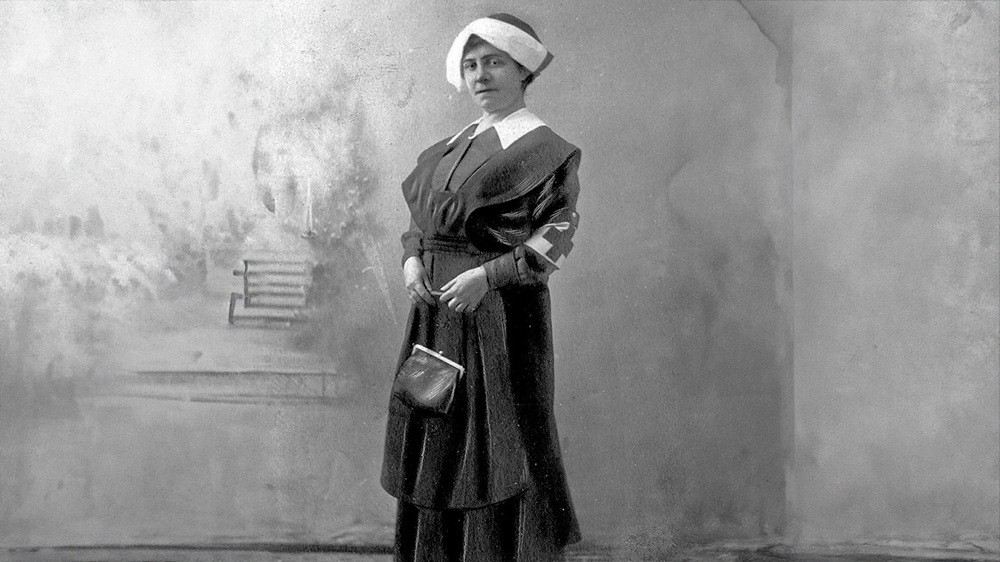
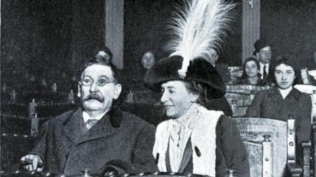
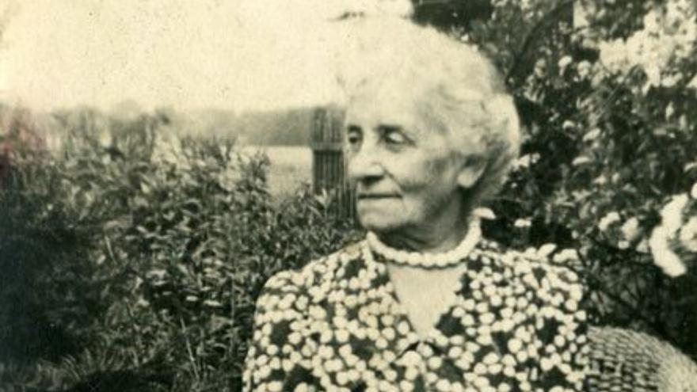

Iconas
Sofía Casanova



Ficha rápida da icona
- Nome: Sofía Casanova
- Naceu: A Coruña, 30 de setembro de 1861
- Morreu: Poznań (Polonia), 16 de xaneiro de 1958
- Profesión: Escritora, poeta e xornalista
- Especialidade: Correspondente de guerra
- Coñecida por: Ser a primeira correspondente de guerra española e relatar acontecementos como a Primeira Guerra Mundial e a Revolución Rusa.
A icona en si
Hai pouco decateime de que sabía moi pouco sobre Sofía Casanova. Coñecía o seu nome, pero nunca me parara a descubrir todo o que fixera. E paréceme curioso, porque foi unha desas persoas que abriron camiño e das que, aínda así, non se fala todo o que se debería.
Sofía Casanova naceu na Coruña en 1861 e foi escritora, poeta e xornalista. Despois de casar co filósofo polaco Wincenty Lutosławski marchou vivir a Polonia, onde acabou converténdose nunha testemuña privilexiada dalgúns dos acontecementos máis importantes do século XX.
Foi a primeira correspondente de guerra española e contou desde o terreo conflitos como a Primeira Guerra Mundial ou a Revolución Rusa, sempre cunha mirada moi humana, centrándose nas persoas que sufrían as consecuencias da guerra máis ca nas batallas.
Creo que o que máis admiro dela é a súa maneira de escribir. Non buscaba simplemente informar do que estaba pasando; tamén intentaba explicar como se sentían as persoas que o estaban vivindo. Hai algo nese xeito de contar as historias co que tamén me sinto identificada.
Ás veces esquecemos que detrás de cada feito histórico hai persoas de carne e óso.
Eu non escribo nun xornal, pero gústame pensar que este blog tamén serve para iso: para descubrir historias que, dalgún xeito, non deberían quedar no esquecemento. Supoño que por iso me sinto un pouco identificada con Sofía.
Ela escribía para que a xente entendese o mundo que tiña diante; eu escribo para intentar entender un pouco mellor o meu.
Ao longo da súa vida publicou novelas, poesía e centos de artigos, e chegou a entrevistar figuras tan relevantes como León Trotski. Mesmo cando perdeu gran parte da visión a consecuencia dun accidente durante a Revolución Rusa, non deixou de escribir. Esa afouteza paréceme tan admirable como todo o que chegou a contar.
Quizais por iso me dá pena que non sexa unha figura máis coñecida. Porque, grazas ás súas palabras, hoxe podemos achegarnos a algúns dos momentos máis importantes da historia desde os ollos de quen realmente estivo alí. E iso tamén é unha forma de deixar pegada.
Bibliografía
Colaboradores de Wikipedia. (2026, 22 xuño). Sofía Casanova. Wikipedia, la Enciclopedia Libre.
https://es.wikipedia.org/wiki/Sof%C3%ADa_Casanova
Tasmanuser. (2025, 27 novembro). Sofía Casanova, reportera y escritora. Sociedad Geográfica Española.
https://sge.org/publicaciones/articulos/sofia-casanova/